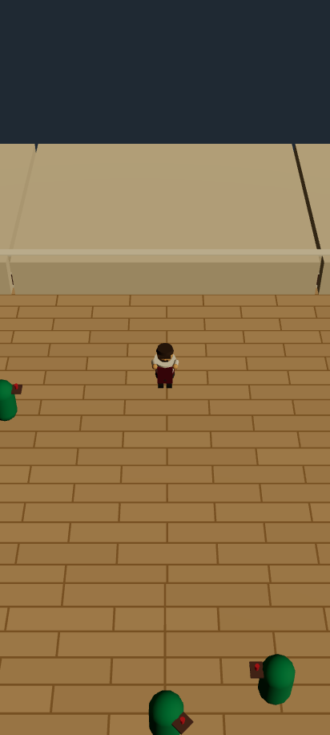
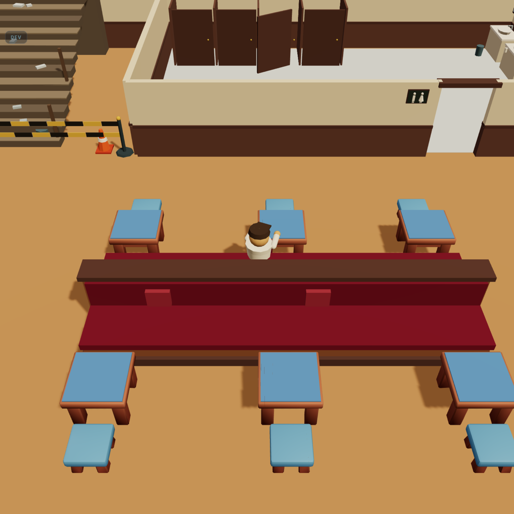
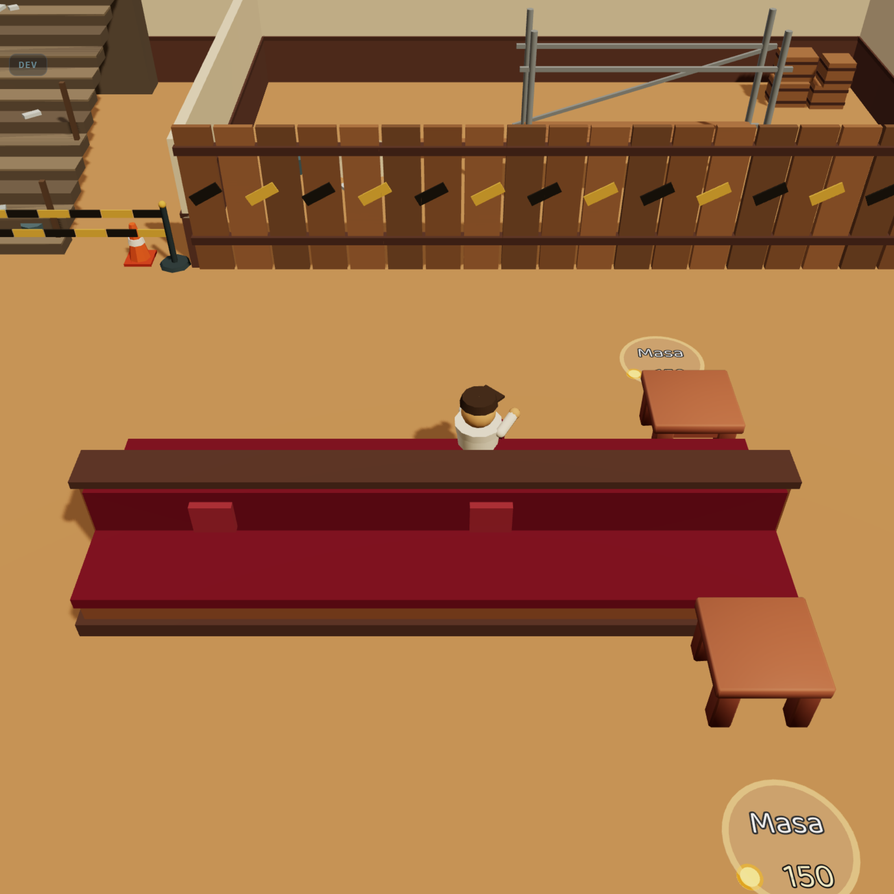
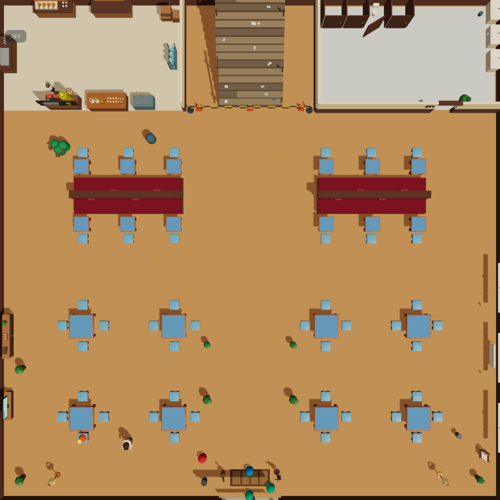
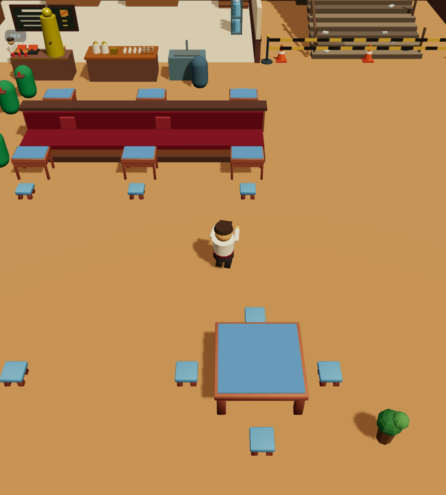
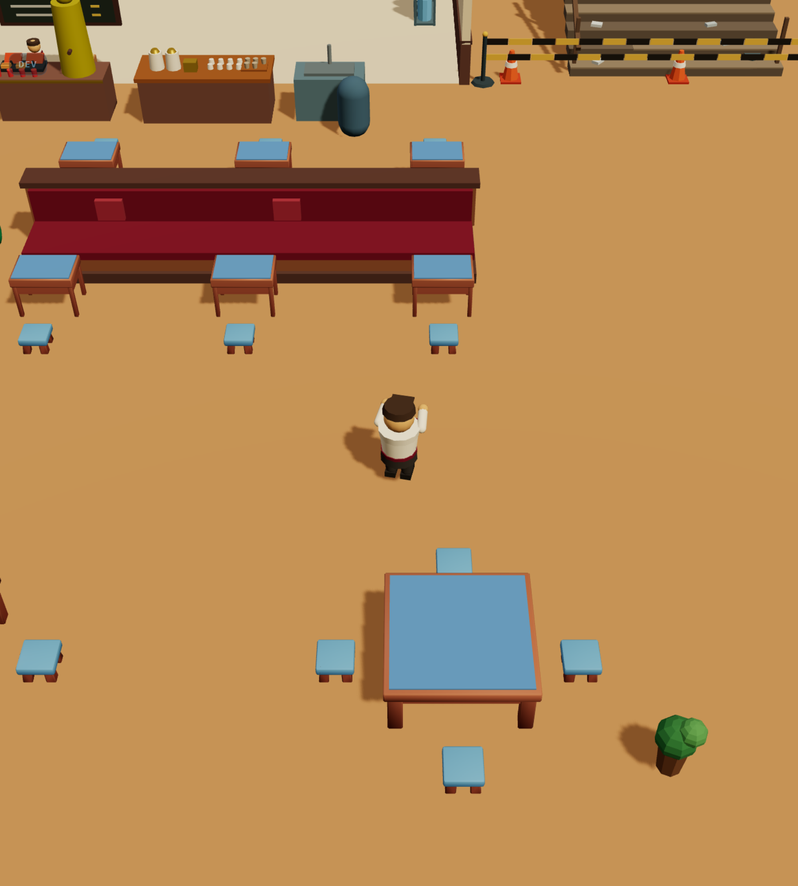
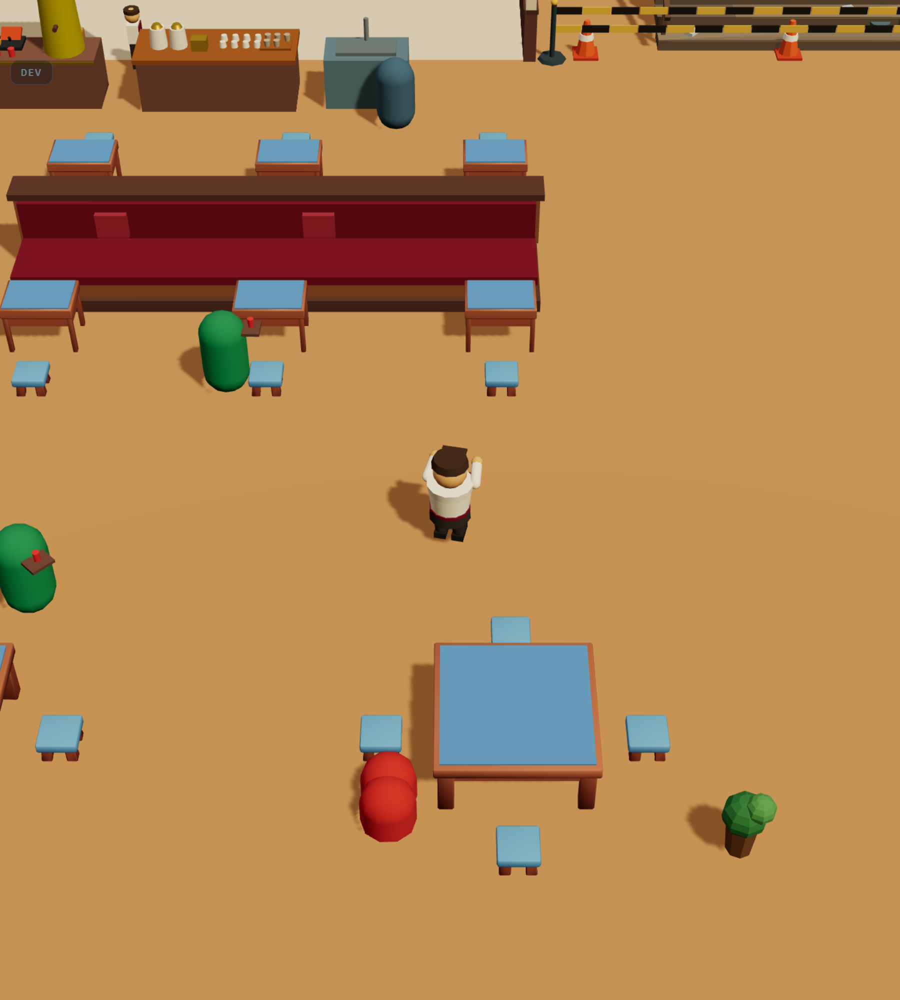

BM · maket taşıması · adım 3 ve 4
Arka bant üç düz krem kutu olmaktan çıkıp maketin odalarına döndü. Geriye ölçü katmanının son maddesi kaldı: kamera. İkisi de senin onayını bekliyor.
Duvar 3,2'ye çıkınca bandın üç düz krem kutusu kadrajın beşte birini kaplayan bomboş bir yüzeye
dönüştü — b6b-arka-bant.html'in üçüncü bulgusu, o zaman 1,2'lik bant için yazılmıştı ve
duvar yükselince ağırlaştı. Çözümü aramaya gerek yoktu, maketin kendi kurgusu buydu:
ADIM 3 SERVİS KÖŞESİ x∈[−17, −4,6] · ADIM 5 MERDİVEN x∈[−4,6, 4,6] · ADIM 4 LAVABO x∈[4,6, 17]. Bandın önü (z −9,8 … 0) bilerek boş: geniş tek sıra masalık şerit. docs/maket/maket-v13.html · buildFloor1
| Blok | Dün | Bugün |
|---|---|---|
| Servis köşesi | düz krem kütle | fayans zemin · cezve ocağı · tezgâh · iki raf · bulaşık · kasa istifi · damacana rafı |
| Merdiven kovası | düz krem kütle | yıkık merdiven (14 basamak) · uyarı şeridi · üç duba |
| Lavabo — açık | maketin odası (B6b) | değişmedi; kabuğu artık bandın |
| Lavabo — kilitli | üç düz düzlem (1,2 ölçeğinde) | tahta perde 2,40 · arkasında iskele · moloz · kasalar |
| Bandı kapatan şey | kutunun kendisi | binanın arka duvarı (3,2, salonun duvarıyla aynı bileşen) |




Bant hâlâ yürünmez — alanlar z = −9,8'de bitiyor (clampToOpenAreas).
Duvarlar zaten collision değil (activeSolids yalnız masa · sandalye · ocak ·
bulaşık taşır), o yüzden nav, denge, kayıt ve testlerin hiçbiri etkilenmedi. Merdivenin
dubaları bile maketin salon tarafındaki yerlerinden kovanın içine alındı: oyuncunun
yürüdüğü hiçbir yerde içinden geçilen obje yok.
Servis köşesi ve merdiven kovası artık salondan görünüyor; arka yarının arka duvarı
çizilmiyor, çünkü o kenar tek düz duvar değil bir program (servis açık · kova açık ·
lavabo kapılı). Bu maketin kendi kurgusu ama oyunda ilk kez böyle.
Onaylamazsan geri dönüş noktası tek satır: Scene.Walls içindeki
side === 'back' atlaması.
Ölçü katmanının son maddesi. Oyunun kamerası fov 50, maketinki
fov 34; açı ikisinde de aynı (44° ↔ 45°), fark yalnız fov ve mesafe.
Aşağıdaki üç kare aynı noktadan ve aynı kapsamla alındı: fov daralınca mesafe
tan25° / tan(fov/2) ile telafi edildi, yani oyuncunun çevresi üç karede de aynı boyutta.
Değişen tek şey derinlik.



window.__devCam({ fov, distMul }) (DEV ölçüm kolu, üretimde ölü kod)"Uzak/yakın oran" şu: kameradan 14 birim daha uzaktaki bir masa, oyuncunun yanındaki masaya göre ne kadar büyük görünüyor. fov 50'de 0,60 (belirgin küçülme = derinlik), fov 34'te 0,70. Yani maketin fov'u sahneyi %16 düzleştiriyor — duvarlar daha az yakınsıyor, kat daha çok "maket" gibi okunuyor. Bu bir kusur değil, bir tercih.
| Kalem | fov 50 | fov 34 | Sonuç |
|---|---|---|---|
| Kameranın oyuncuya uzaklığı | 12,0 – 21,1 | 18,3 – 32,2 | — |
| Katın uzak köşesine uzaklık | ~45 | ~66 | — |
Sis (fogNear 34 · fogFar 72) |
%29 uzak kenarda | %84 uzak kenarda | sis yeniden ayarlanmalı |
| Gölge kamerası (ortografik ±30) | kat sığıyor | kat sığıyor | değişmez |
| Telefon portresi (fit ×1,3) | d 11,05 | d 16,85 | ölçülmedi (Faz F) |
Önerim: fov 50 KALSIN. Üç sebep: (1) maketin 34'ü bir gözlem aracının tercihi, oyunun değil — maket katı incelemek için var, oyun içinde yaşamak için; (2) düzleşme kazancı %16 ve kadrajda zar zor okunuyor, buna karşılık sisin yeniden ayarlanması ve telefonda yeniden ölçüm gerekiyor; (3) D-072'nin kuralı ölçüyü dondurmak — bugün çalışan bir sayıyı ölçülmemiş bir kazanç için değiştirmek o kuralın tersi. Ama bu senin kararın: 50 · 42 · 34. Hangisini seçersen ölçü listesine o yazılır.
İki karar verilince ölçü katmanı kapanır ve bir daha açılmaz: sanat cilası (dekor · materyal ·
renk · ışık · animasyon) bu listeye dokunamaz, sistem işi (denge · Faz 4/5/7/8) bu listenin
üstüne kurulur. simulate.ts tam bu noktada, tek seferde yeniden ölçülür.